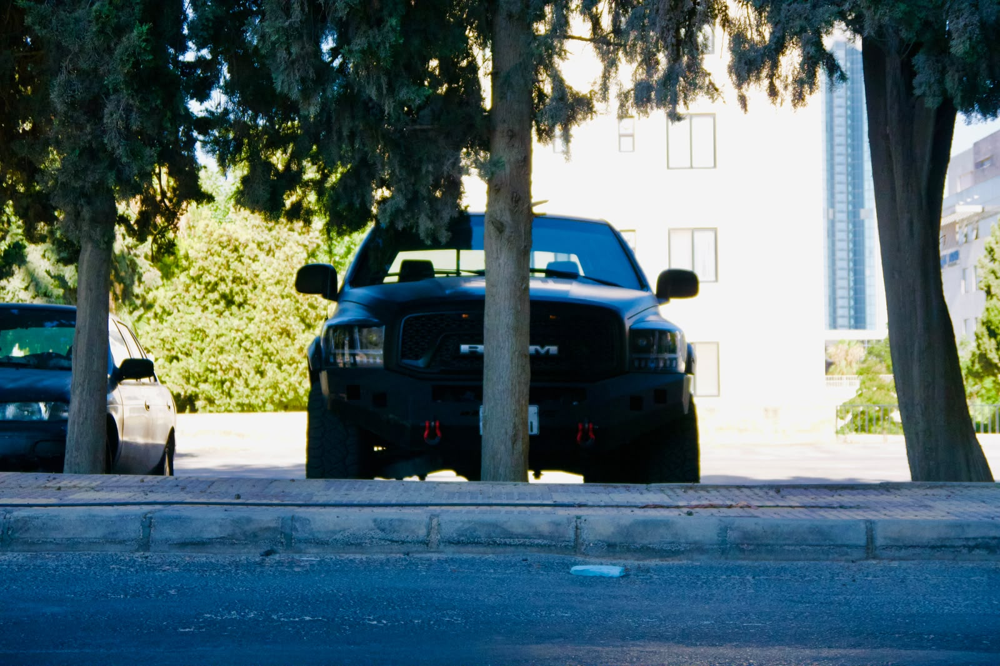
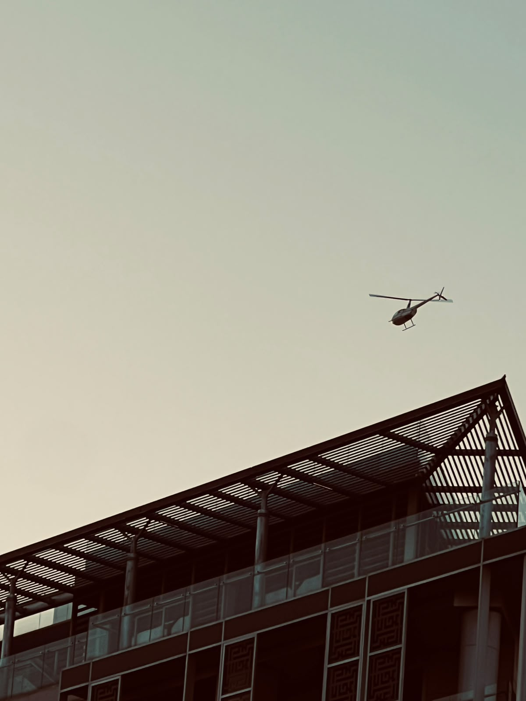
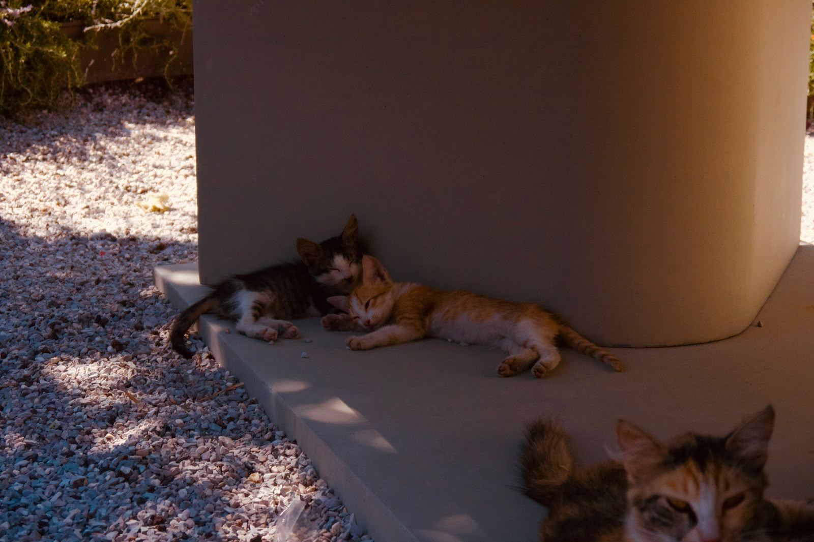

The Narrow Path
📷 CameraPanasonic Lumix DMC-G5
🔍 Lens14–42mm
⚙️ ISO200
🎯 Aperturef/5.6
⏱ Shutter1/250 sec
A narrow passage between a car and the trees, where light and shadow create a simple yet striking composition.
Read More →
A collection of some of my favourite photographs.
A narrow passage between a car and the trees, where light and shadow create a simple yet striking composition.
Read More →
A clean side profile of the RAM 1500, showing its bold design and presence.
Read More →
Sometimes the simplest thing you can do is stop, breathe, and look up.
Read More →
Hi, I'm Fares. I'm a photographer from Jordan who loves wildlife, architecture, street photography, and capturing moments that make people stop scrolling. Photography started as curiosity and quickly became something I genuinely enjoy doing every chance I get. Every image on this website represents a memory, a lesson, or a place that inspired me.
Have a question, feedback, or just want to talk photography?
Instagram: @fares.faouzi12
Email: throughthelens.hq@gmail.com